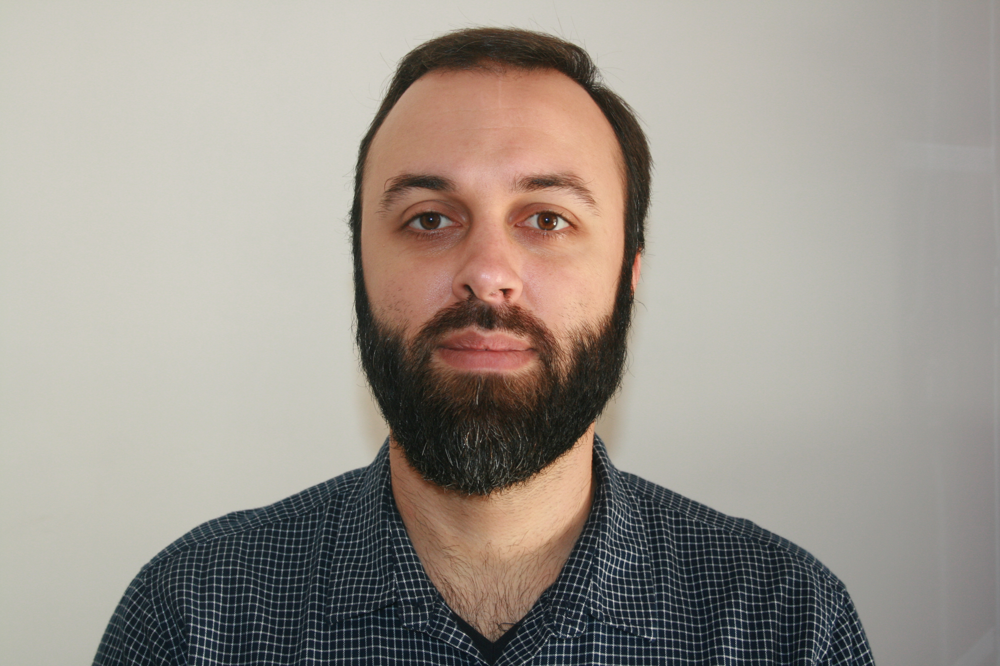

"Suerte no es conseguir lo que quieres, sino sobrevivir a lo que no quieres."
Soy un ingeniero topógrafo al que le apasionan las nuevas tecnologías, lo que me ha llevado al mundo de los drones (RPAS) y al modelado 3D. También disfruto con la programación y el desarrollo web y GIS.
Experiencia laboral
| Empresa | Cargo | Localización | Desde - Hasta |
|---|---|---|---|
| Esri España | Solution Engineer (Prácticas) | Madrid (Madrid) | Abril 2016 - Julio 2016 |
| TrabajosConDron S.L. | Piloto-Socorrista | Marbella (Málaga) | Julio 2015 - Septiembre 2015 |
| Wroclaw University of Environmental and Life Sciences | Modelador 3D as-built | Wroclaw (Polonia) | Enero 2013 - Julio 2013 |
Educación y Formación
| Título | Entidad | Promoción |
|---|---|---|
| MasterGIS | Esri España | 2016 |
| Curso de Piloto RPAS/UAV (MTOW 25-150kg) | Club de Vuelo TAS | 2015 |
| Curso Avanzado Piloto RPAS (MTOW hasta 25kg) | Club de Vuelo TAS | 2014 |
| Seminario: Spatial Data Infrastructure on IPAD | Wroclaw University of Environmental and Life Sciences (Poland) Universidad de La Laguna |
2013 |
| Ingeniero Técnico de Topografía | Escuela Politécnica Superior de Jaén | 2012 |
Competencias Profesionales
Idiomas
- Español (Nativo)
- Inglés (B2)
Conocimientos
- Ofimática: Microsoft Office, OpenOffice.
- CAD: AutoCAD, MDT.
- Sistemas de Información Geográfica (GIS): Plataforma ArcGIS (Desktop, Server, PRO, Online, Developers).
- 3D: Leica Cyclone, SketchUp.
- Edición de imagen: GIMP.
- Lenguajes de Programación: Pascal, .NET, HTML5, CSS3, JavaScript, jQuery, Python (ArcPy).
- Tratamiento de imágenes con drones: Drone2Map, Pix4D, OneButton, Agisoft PhotoScan, OrtoSky.
Habilitaciones RPAS
- DJI Phantom 2
- DJI S-900